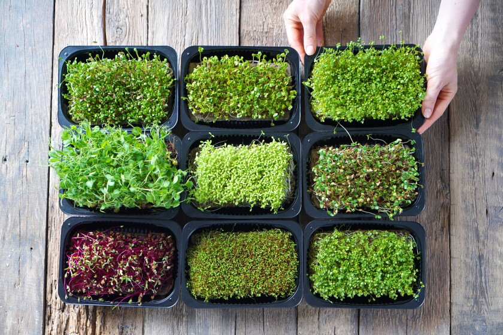

Microgreens Recipes
Delicious and healthy microgreens-based recipes to nourish your body! 🥗🌿
1. Microgreens Salad
Ingredients
- 1 cup mixed microgreens
- ½ cucumber (sliced)
- ½ tomato (chopped)
- 1 tsp lemon juice
- Salt & pepper to taste
- Olive oil (optional)
Instructions
- Combine all ingredients in a bowl.
- Toss gently.
- Serve fresh as a side or light meal.
2. Microgreens Paratha
Ingredients
- 1 cup wheat flour
- ½ cup mixed microgreens (chopped)
- ½ tsp ajwain (carom seeds)
- Salt to taste
- Water to knead
- Ghee/oil for roasting
Instructions
- Mix flour, microgreens, salt, and ajwain.
- Knead into soft dough with water.
- Roll into parathas and roast with ghee on tawa.
- Serve with curd or pickle.
3. Microgreens Smoothie
Ingredients
- ½ cup microgreens (like wheatgrass, basil)
- 1 banana
- ½ apple or mango
- 1 cup water or coconut water
- 1 tsp honey (optional)
Instructions
- Blend all ingredients until smooth.
- Serve chilled.
4. Microgreens Poha
Ingredients
- 1 cup poha (flattened rice)
- ½ cup microgreens
- 1 onion (chopped)
- 1 green chili
- ½ tsp mustard seeds
- Salt, lemon juice
Instructions
- Wash and drain poha.
- Sauté mustard seeds, onion, chili.
- Add poha, salt, and mix.
- Add microgreens at the end and cook for 1 minute.
- Squeeze lemon juice before serving.
5. Microgreens Chutney
Ingredients
- ½ cup microgreens
- ¼ cup coriander
- 1 green chili
- 1 garlic clove
- Salt & lemon juice
Instructions
- Grind all ingredients with little water.
- Serve as dip with snacks or spread on toast/paratha.
6. Microgreens Stir Fry (Sabzi style)
Ingredients
- 1 cup microgreens
- 1 small potato (chopped)
- ½ tsp cumin seeds
- Turmeric, salt, chili powder
- Oil
Instructions
- Heat oil, add cumin, then potato.
- Once soft, add spices and microgreens.
- Cook for 2-3 minutes only.
- Serve with roti or dal-rice.